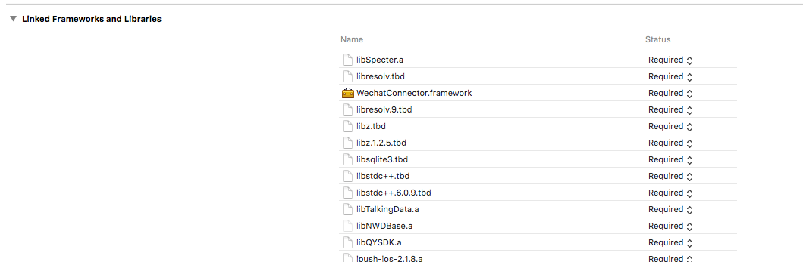

集成Specter SDK
幽灵分析系统
引入静态库SDK
导入静态库
配置库文件
配置头文件
引入动态库SDK
配置framework文件
代码集成功能
引入头文件
初始化Library(常用)
上报事件(常用)
计时事件(常用)
清除所有计时事件
注册超级属性
一次性设置超级属性
注销超级属性
清除所有超级属性
管理用户身份
用户身份别名
存储用户配置文件
设置文件属性
递增的数字属性
跟踪收入
注册推送通知
各种开关标识
上报标识开关
摇一摇标识开关
SDK相关url描述
事件名称定义
圈选控件生成算法
埋点监控描述
控件型
普通触摸控件UIControl
文本输入框控件UITextField
表格控件UITableView
集合控件UICollectionView
网页控件UIWebView(不能圈选)
非控件型
页面停留事件
自动埋点事件
首次启动App事件
App崩溃事件
Published with GitBook
导入静态库
导入libSpecter.a库文件
在开发的App的项目中配置libSpecter.a必要条件

results matching "
"
No results matching "
"